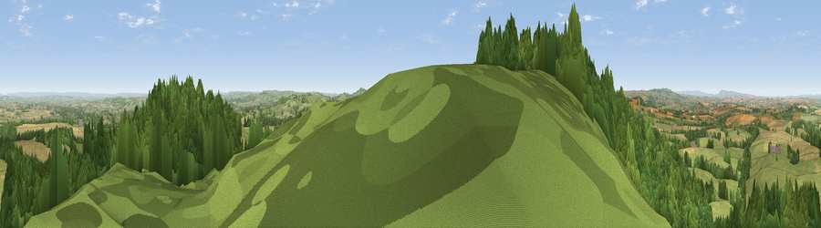

Viewpoint near Hewish
#3380 in England · top 7% of its area beats it · near HewishThe view, rendered

A 360° render of this exact spot computed from the terrain model, tree cover and land cover — summer colours, afternoon light, calibrated against photographs of famous viewpoints. Real trees, hedges and buildings will differ in detail.
The panorama
Grey silhouette: terrain skyline in each direction (720 bearings, Earth curvature and refraction included). Dashed green: skyline with trees (+15 m) and buildings (+8 m) as obstacles. Blue strip: how far the ground is visible on each bearing.
Where the view opens
Wedge length = distance to the farthest visible ground on that bearing (vegetation-aware). Rings at 10, 25 and 50 km.
What fills the view
48% woodland · 35% grassland · 16% cropland ·
Angular shares of the visible panorama (visual magnitude), not map area. Landscape diversity 0.46 (0–1 Shannon).
Key numbers
More beautiful places nearby
The staircase of upgrades: each row has a higher view potential than everything closer. Driving times are estimates from straight-line distance, calibrated against real road routing — check an actual route before setting out.
| Place | Direction | Drive | Score |
|---|---|---|---|
| Viewpoint near Hewish | E · 0 km | ~1 min | 78.5 |
| Viewpoint near Burstock | S · 9 km | ~18 min | 81.8 |
| Lewesdon Hill | SSE · 10 km | ~19 min | 83.3 |
| Viewpoint near North Chideock | S · 18 km | ~31 min | 87.1 |
| Golden Cap | S · 18 km | ~31 min | 88.7 |
| The Knoll | SSE · 26 km | ~42 min | 91.0 |
50.88751, -2.85081 · source: screening · position refined by local search. Computed location — check access rights before visiting.